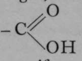
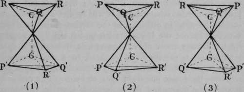

Stereo Chemistry. Part 3
Description
This section is from the book "Modern Chemistry", by William Ramsay. Also available from Amazon: Modern Chemistry: Theoretical and Modern Chemistry (Volume 2).
Stereo Chemistry. Part 3
Fig. 6.
It is possible for a compound to contain two or more asymmetric carbon atoms. Such is the case with the tartaric acids. The structure of these acids is shown in Fig. 7. It is supposed to be represented by two tetrahedra, placed apex to apex, one of course being inverted. The carbon atoms in the interior of each tetrahedron are united by one " bond 99 or valency. The other three valencies of each carbon atom are employed in union with three separate atoms or groups, P, Q, and R, and P', Q', and R'. In the case of the tartaric acids, these are respectively an atom of hydrogen, the hydroxyl or - OH group, and the carboxyl or  group. It will be noticed that in (I) of Fig. 7, it we look down on the surface P Q R, these letters follow each other in the opposite direction to the hands of a watch. Let us suppose that polarised light, entering the tetrahedron from above, would experience rotation in that direction ; it passes from the base of the inverted tetrahedron to the summit. Similarly, light entering the lower tetrahedron from below will be rotated in the same sense, i.e. in the direction P' Q' R' ; but if it fall on the lower tetrahedron from above, it will receive a right-handed screw, the same in direction as the motion of the hands of a watch. Hence the lasvo-rotation which the light acquires by its passage from above downwards through the upper tetrahedron is reversed and changed to a dextro-rotation by its passage through the lower tetrahedron, seeing that it traverses the lower one from apex to base. The one compensates the other, and the molecule is inactive, or " internally compensated." But if the positions of Q' and R' in the lower tetrahedron be interchanged, as in (2), then polarised light, entering the tetrahedron from below, will have a right-handed screw imparted to it ; and consequently, if from above, a left-handed rotation, opposite to that of the hands of a watch. It follows, then, that the left-handed rotation which the polarised light acquires by its passage downwards through the upper tetrahedron will be doubled by its passage downwards through the lower one, and . the crystal will be laevo-rotatory. Similarly, (3) shows a dextro-rotatory arrangement. It is evident, by inverting the figures, that the direction of rotation is not changed. Hence we have the inactive molecules of racemic acid (for so this variety of tartaric acid is termed) in (1), laevo-rotatory tartaric acid in (2), and dextro-rotatory in (3). It is, of course, not known in which order the groups are placed to produce dextro- or laevo-rotation, but the idea is easily understood. A fourth variety of tartaric acid may, of course, be prepared by mixing equal weights of the dextro- and lasvo- varieties ; it is inactive, but it is a mixture, and not a definite compound, and it must not be confused with the racemic acid of (1). This fourth variety can be separated into its constituents by Pasteur's device of crystallising the sodium ammonium salt, and separating by hand those crystals which have a right-handed facet from those with a left-handed facet ; but the true racemic acid cannot be thus resolved at ordinary temperatures; it must be converted into a salt of some optically isomeric base, and heated; on solution in water, it is now found to consist of a mixture of dextro- and laevo-tartaric acids, and it may be separated by crystallisation of their sodium-ammonium salts, as before described.
Fig. 7.
The tetrahedral form appears to be characteristic of the compounds of all tetrad elements; for W. J. Pope has recently obtained compounds in which the element tin is combined with four different groups, each containing carbon and hydrogen ; and these display optical isomerism when resolved by appropriate means into their stereo-chemical isomers. The same has been shown by S. Smiles to be true for compounds of a similar nature containing tetrad sulphur, and this observation has been confirmed by Pope. It will probably be found true for similar compounds of all tetrad elements where they hold in union four different elements or groups.
The stereo-isomerism of compounds of nitrogen has also been proved to hold by J. A. LeBel. As nitrogen is either a triad or a pentad, however, the tetrahedron cannot be the fundamental figure. It is probably a pyramid erected on a square base. LeBel made a curious discovery in this connection : it is that the groups in combination with the nitrogen must have at least a certain degree of complexity, and a corresponding high molecular weight, otherwise such isomers are not capable of existence. It is conjectured that the groups combined with the nitrogen, if they are not sufficiently large, change places, so as to form the most stable configuration ; it is only where they are large that such molecular rearrangement does not occur. LeBel's work has been confirmed by Pope.
Continue to: